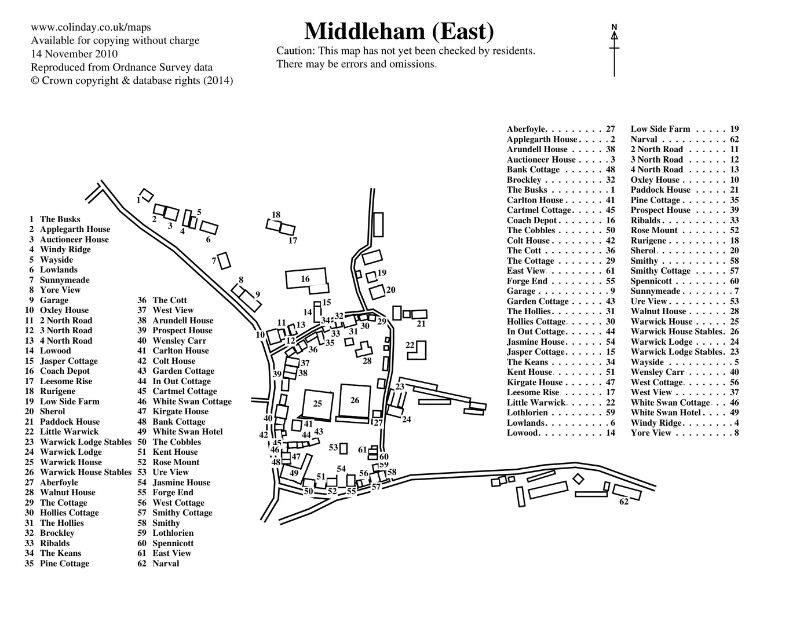
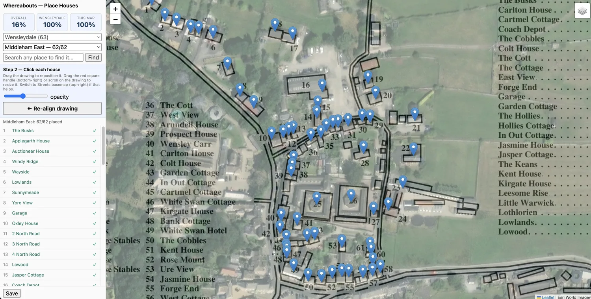
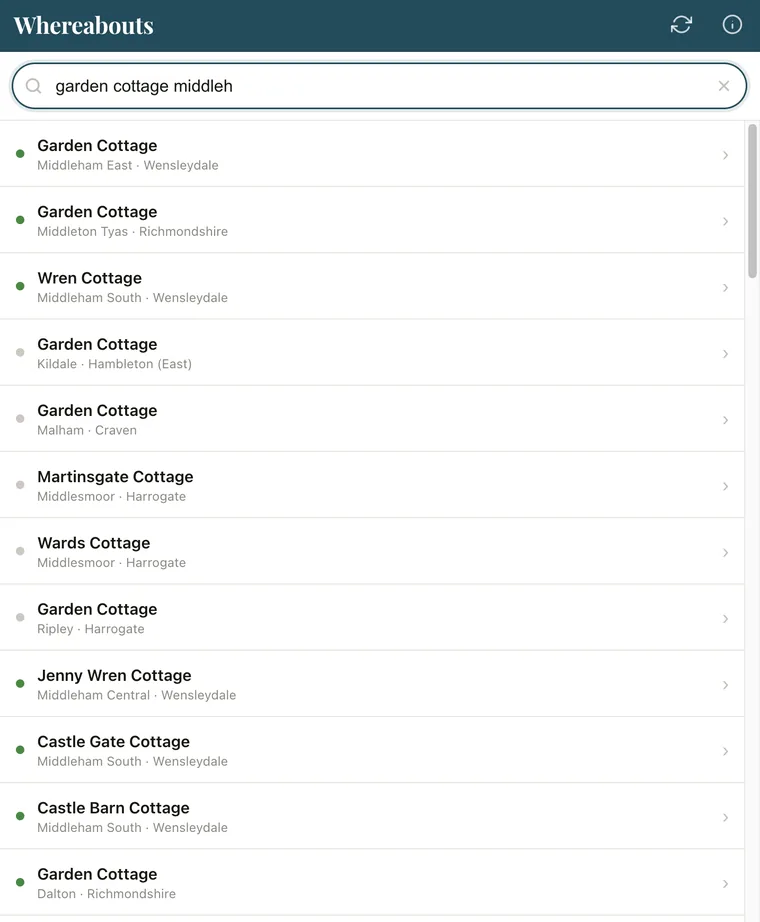
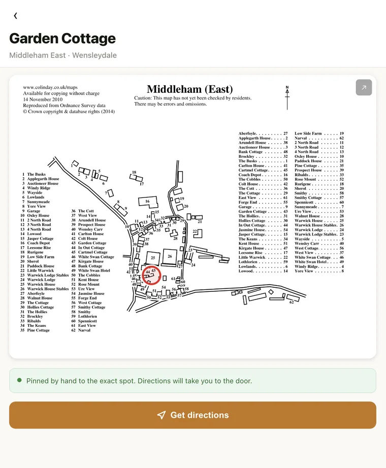

A great many houses in rural North Yorkshire have a name but no number. Rose Cottage, The Old Vicarage, Garden Cottage. Addresses that mean everything to a postman who has worked the round for years and nothing at all to a satnav. Type one into a mapping app and you tend to get either no result or a pin dropped confidently in the wrong village.
For anyone who has to actually turn up, that gap costs time. A delivery driver working through a full van, an ambulance crew, a carer, a first-time visitor with only a name to go on: all of them lose minutes, sometimes a lot more, to houses that no mainstream map can place.
These places are not undocumented, though. For more than twenty years, Dr A Colin Day has been drawing village maps by hand and publishing them free, each one naming every property against a numbered key. His maps are how a great many of these front doors already get found. The limitation is only in the format. They are individual PDFs, dozens upon dozens of them, and they help most when you already know which sheet to open. Standing at a junction with a house name and no idea which of his maps it belongs to, a folder of PDFs is slow going.
Whereabouts takes those maps and makes them work like a modern address book. It reads every one of Colin's PDFs, fixes each named house to its exact position on the ground, and puts the whole collection behind a single search that runs on a phone, offline, wherever you happen to be. His maps do the hard part; this makes them instant to reach. Colin knows the project well and gives it his full support.
What follows is one house traced through the whole process, so the pieces are easy to see: Garden Cottage in Middleham, number 43 on Colin's map.
Colin publishes each map as a PDF. A program I wrote works through his website, downloads every one, and reads the numbered key printed beside the drawing, turning it into a plain list of names. Garden Cottage becomes "43, Garden Cottage", in sequence with the other sixty-one houses in the village. The drawing itself is kept as an image, since it is what you will see when you look a house up.

The difficulty is that every sheet carries three different kinds of number, and to a computer they look alike. The one worth having is the key. The other two are an alphabetical cross-reference and the loose numbers scattered over the drawing itself, and most of the work here is getting the program to tell them apart and read only the key. It is all Python: pdfplumber, which can pick out text by exactly where it sits on the page, does the reading, and PyMuPDF renders the drawing to an image.
A name is not a location. Colin's drawing shows where Garden Cottage sits within the village, but not the latitude and longitude a phone needs to route to it. Deriving those reliably is not something a computer can be trusted to do, so I do it by hand, one house at a time.
The tool I built for it lays Colin's drawing, half-transparent, over satellite imagery of the same village. Because his maps are drawn by hand, they never align perfectly with the real streets; a lane that runs straight in life might carry a slight bend on the page, and a row of cottages might sit at a subtly different angle. Rather than accept a loose fit, the tool lets me take the drawing by its corners and skew and stretch it until it sits true over the actual rooftops. Once Garden Cottage on the drawing rests over Garden Cottage in the imagery, a single click fixes its real-world position. I repeat that for every house in the village. Each pin in the app was set this way, by me.

In principle the drawing could be aligned automatically and each house inferred from it. In practice, terraces, barns and outbuildings sit close enough together that an automated guess would misplace a meaningful fraction of them, and a house pinned in the wrong place is worse than one left unpinned, because it looks reliable right up until it sends you somewhere wrong. By hand is slower, but every location is exact rather than estimated. The tool is a small Python server (FastAPI) driving a browser map (Leaflet) over Esri's satellite imagery, with the overlay positioned using the projection maths that web maps rely on.
The finished data becomes a small, plain website. You type a house name and a tolerant search finds it even from a rough spelling or half a name. Enter "garden cottage middleh" and Garden Cottage in Middleham East rises to the top, its village shown beneath it so it is easy to tell from the other Garden Cottages, of which there are several. Select it and the house appears ringed on Colin's original drawing. Press "Get directions" and the exact spot opens in Google Maps, ready to navigate (or Apple Maps if you are on an iPhone).


The detail that earns its place in the dales is that all of this works with no signal. The first time you open the app on wifi it stores everything on the phone, and after that it asks nothing of the network. Mobile coverage out there is unreliable; GPS is not, and once the app is loaded, GPS is all it needs.
The app is a single web page in plain JavaScript, with no accounts and no login. Fuse.js handles the tolerant search, a service worker keeps everything on the phone for offline use, and the directions button opens Google or Apple Maps depending on the device. Nothing runs on a server while you use it, which is also why it keeps working when there is no server to reach.
Whereabouts rests entirely on Colin's work and could not exist without it. He drew the maps and named the houses; what this adds is reach, turning a shelf of separate PDFs into something you can search in a second from the roadside and follow to the door. He follows the project closely and backs it fully, which counts for a great deal.
It is still growing. I am placing houses across North Yorkshire a dale at a time, so some villages are complete while others are still names waiting on their coordinates. Where I have not yet reached, the app says so plainly and points you to the centre of the village rather than guessing at the exact door.